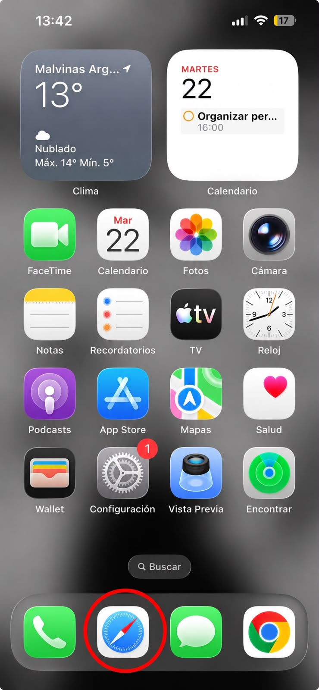
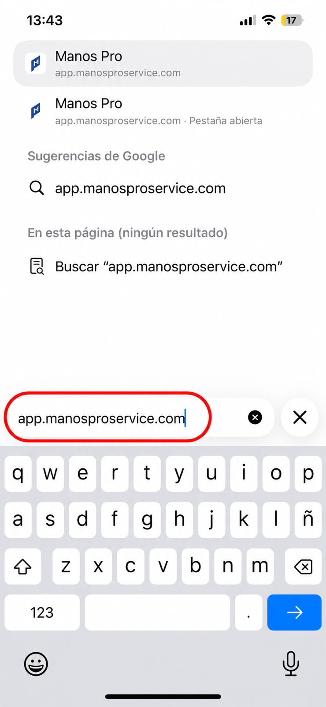
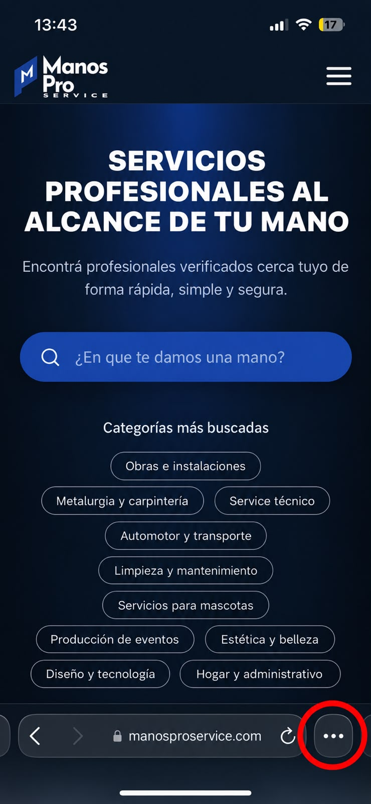
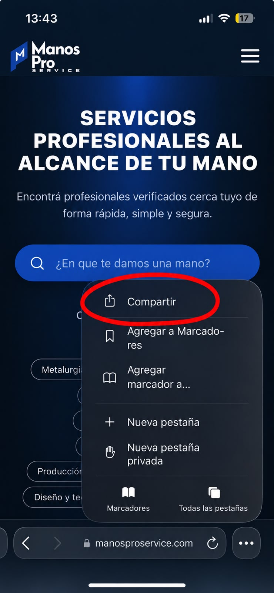
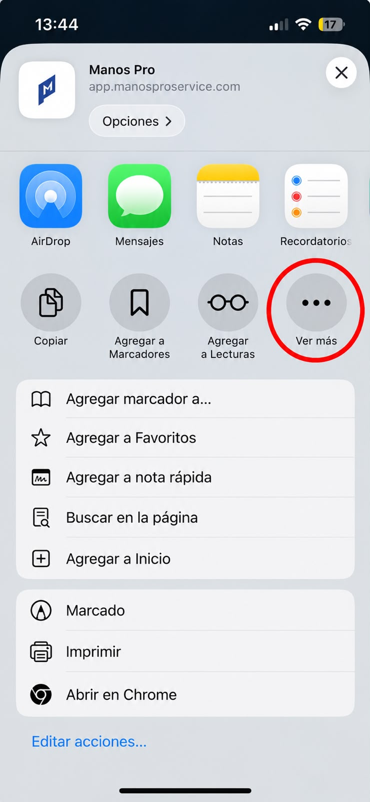
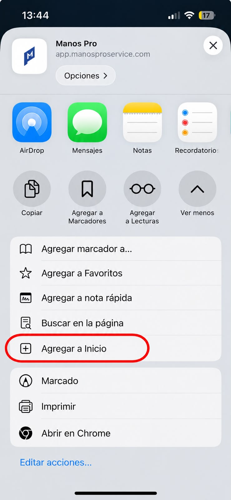
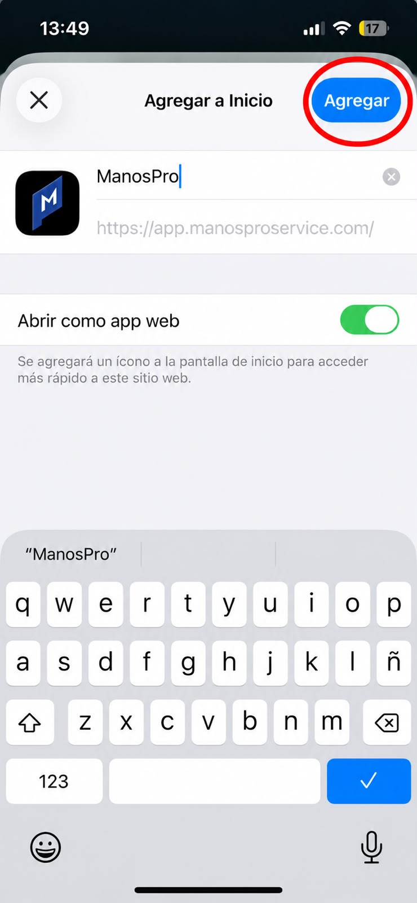
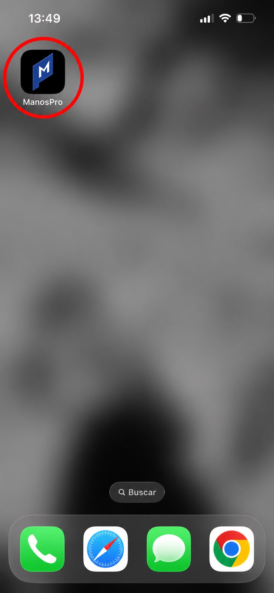

1. Elegís el oficio que necesitás
Plomería, electricidad, gas, pintura, mantenimiento general y más. Vos indicás qué problema tenés.
Manos Pro es la plataforma que une a clientes con electricistas, plomeros, gasistas, pintores y más, de forma simple, segura y profesional.
Informate sobre cómo trabajamos antes de descargar la app.
Pensamos el sistema para que tanto clientes como profesionales tengan una experiencia clara y ordenada.
Plomería, electricidad, gas, pintura, mantenimiento general y más. Vos indicás qué problema tenés.
Ver perfiles, experiencia, trabajos realizados y opiniones de otros clientes para elegir con confianza.
Acordás día, horario y condiciones con el profesional. Buscamos que todo quede claro desde el inicio.
Sabemos lo difícil que es encontrar a alguien responsable que cumpla. Por eso diseñamos Manos Pro para que tengas información y seguridad antes de decidir.
Perfiles claros, rubros definidos y datos ordenados para que sepas exactamente qué hace cada profesional.
Información del servicio, zona de trabajo y detalles clave para evitar malos entendidos.
Detrás de la app hay un equipo que piensa procesos, calidad y mejora continua, no solo una lista de teléfonos.
Si te dedicás a un oficio, Manos Pro te ayuda a mostrar tu trabajo de forma profesional y a organizar mejor tu día a día.
Armamos una presencia clara y profesional para que tus clientes entiendan qué hacés y cómo trabajás.
Estar dentro de Manos Pro te acerca a personas que realmente necesitan tu servicio en tu zona.
Políticas, acuerdos y buenas prácticas para que el trabajo sea más prolijo y ordenado para todos.
Mientras llega la app para iOS, podés usar Manos Pro directamente desde tu iPhone como si fuera una aplicación.
Seguí estos simples pasos:

Abrí Safari desde tu iPhone.

Escribí app.manosproservice.com en la barra de direcciones.

Una vez dentro de Manos Pro, tocá el menú de los tres puntos.

En el menú, seleccioná la opción “Compartir”.

Buscá y seleccioná “Ver más”.

En las opciones, tocá “Agregar a Inicio”.

Dejá el nombre como está y tocá “Agregar”.

Ya tenés Manos Pro en tu pantalla de inicio para acceder rápidamente.
Manos Pro es una plataforma que organiza y conecta. No somos quienes ejecutan el oficio, sino quienes ayudamos a que el encuentro entre cliente y profesional sea más claro y profesional.
Estamos en proceso de desarrollo y mejora del sistema. Podés dejar tus datos y te avisamos cuando esté lista.
El modelo puede variar según la etapa del proyecto y la zona. Dejando tus datos te contactamos con la información actualizada según tu rubro.